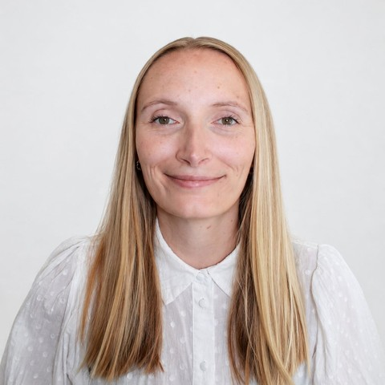

Denmark
With a background in healthcare and a master's in IT, I combine analytical, technical, and user-centred skills. I'm motivated by solving complex problems, working closely with others, and turning user needs into digital solutions that hold up in practice.
With a background in healthcare and a master's in IT, I have developed a strong combination of analytical, technical, and user-centred skills.
I've programmed in Python and JavaScript and have experience with APIs, data analysis, IoT data, and machine learning. Through my study projects I've worked on concrete problems in collaboration with both Vejle Municipality and EWII — from problem framing and data analysis to developing solution proposals.
My experience has given me insight into complex workflows and user needs, while my master's degree has strengthened my skills in software development, UX, and digital solutions. I thrive on learning new things, solving complex problems, and turning ideas into concrete solutions.
I am motivated by solving complex problems, working collaboratively, and translating user needs into effective digital solutions — and I'm looking for a role where I can keep developing my programming skills and grow into a strong backend developer on a skilled team.
Thesis: Developed a machine learning model based on IoT data in collaboration with Vejle Municipality's IT department, to predict when indoor climate would deteriorate so staff could act proactively — including a figure and message designed to alert employees in time to air out the room.
Worked on Vejle Municipality's challenges around indoor climate quality. The goal was to predict when the indoor climate would start to deteriorate, so staff could act proactively before it became a problem.
Collected and processed data from IoT sensors, retrieved the underlying records with SQL, cleaned it, and analysed it in Python to investigate which factors affected indoor climate. Weather data from DMI was integrated into the model via their API, and the result was delivered as both a prediction model and a concrete alert designed for the people who would use it.
Worked on a concrete problem around data errors, scoped together with EWII, and traced it back to its underlying causes and patterns.
Developed a game application from idea to a finished, tested product, working through the full agile cycle.
Worked with user experience and usability testing of digital solutions throughout the programme, from identifying issues to prototyping improvements.
Works systematically to understand a problem, analyse it, and land on a solution that works in practice.
Approaches complex tasks methodically, from problem framing through to implementation.
Explains complex technical and professional topics clearly to different audiences.
Thrives in close collaboration with others while taking ownership of individual tasks.
Motivated by learning new technologies and digging into technical problems.
UX experience combined with a healthcare background gives a natural instinct for who a solution needs to work for.